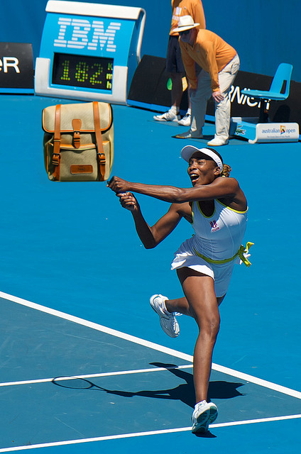

We present Common Inpainted Objects In-N-Out of Context (COinCO), a novel dataset addressing the scarcity of out-of-context examples in existing vision datasets. By systematically replacing objects in COCO images through diffusion-based inpainting, we create 97,722 unique images featuring both contextually coherent and inconsistent scenes, enabling effective context learning. Each inpainted object is meticulously verified and categorized as in- or out-of-context through Large Vision Language Model assessments. Our analysis reveals significant patterns in semantic priors that influence inpainting success across object categories. We demonstrate three key tasks enabled by COinCO: (1) developing a fine-grained context reasoning approach that classifies objects as in- or out-of-context based on three criteria; (2) a novel Objects-from-Context prediction task that determines which new objects naturally belong in given scenes at both instance and clique levels, and (3) context-enhanced fake detection on state-of-the-art methods without fine-tuning. COinCO provides a controlled testbed with contextual variations, establishing a foundation for advancing context-aware visual understanding in computer vision and image forensics.

Dive deeper into our dataset construction, analysis, and downstream tasks.
@inproceedings{yang2026coinco,
title={Common Inpainted Objects In-N-Out of Context},
author={Yang, Tianze and Jordan, Tyson and Sun, Ruitong and Liu, Ninghao and Sun, Jin},
booktitle={Proceedings of the IEEE/CVF Conference on Computer Vision and Pattern Recognition (CVPR)},
year={2026}
}